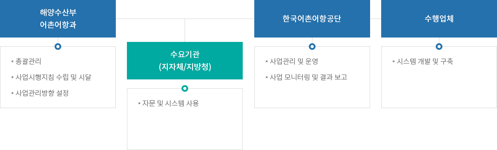
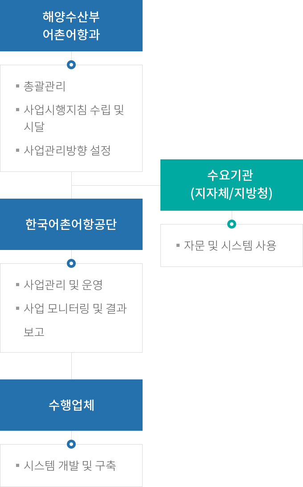

어촌어항관리시스템 구축
- 홈
- 사업소개
- 쾌적한 어항
- 어촌어항관리시스템 구축
추진계획
- (2013년 ~ 2014년) 어촌어항관리시스템 구축 ISP 수립 및 시범 구축
- (2015년 ~ 2018년) 운영관리시스템 구축 완료
- (2019년 ~ 2020년) 안전관리시스템 구축 완료
- (2021년) 환경관리시스템 구축 완료
- (2022년) 건설관리시스템 구축 중
추진체계


- 해양수산부 어촌어항과
- 총괄관리
- 사업시행지침 수립 및 시달
- 사업관리방향 설정
- 수요기관 (지자체/지방청)
- 자문 및 시스템 사용
- 한국어촌어항공단
- 사업관리 및 운영
- 사업 모니터링 및 결과 보고
- 수행업체
- 시스템 개발 및 구축